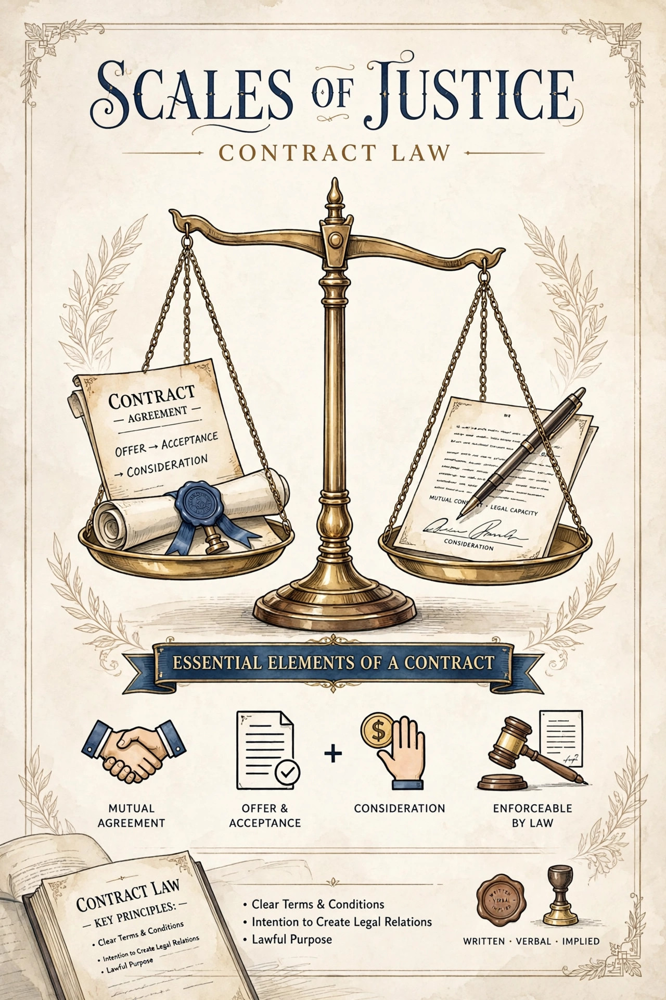

Misrepresentation
From Wikipedia, the free encyclopedia
In common law jurisdictions, a misrepresentation is a false statement of material fact made by one party to another party, which has the effect of inducing that party into a contract. If a misrepresentation is shown to have occurred, the victim has the choice of rescinding the contract or claiming damages, depending on the type of misrepresentation.

Elements
To establish an actionable misrepresentation, the claimant generally must show: (1) a false statement of fact (rather than a mere opinion or statement of intention, though exceptions exist); (2) addressed to the party misled; (3) which was material — that is, it actually induced the party to enter into the contract. Silence is generally not a misrepresentation, although there are exceptions, such as contracts of utmost good faith (uberrima fides), fiduciary relationships, and half-truths that become misleading.
Types
- Fraudulent misrepresentation — a statement made knowingly, without belief in its truth, or recklessly as to whether it is true or false (the test from Derry v Peek (1889)). The victim may rescind and claim damages in the tort of deceit.
- Negligent misrepresentation — a statement made carelessly by a person with no reasonable grounds for believing it to be true. In England and Wales, section 2(1) of the Misrepresentation Act 1967 allows damages unless the maker proves reasonable grounds for belief; liability in negligence at common law was also recognized in Hedley Byrne & Co Ltd v Heller & Partners Ltd (1964).
- Innocent misrepresentation — a false statement made by someone who had reasonable grounds to believe it was true. The usual remedy is rescission, though a court may award damages in lieu of rescission under section 2(2) of the 1967 Act.
Remedies
Rescission aims to restore the parties to their pre-contract positions, but it may be lost through affirmation of the contract, lapse of time, the intervention of third-party rights, or where restitution is impossible. Damages for fraudulent misrepresentation are assessed on the tort measure, covering all losses directly flowing from the fraud (Smith New Court Securities Ltd v Scrimgeour Vickers).
See also
- Breach of trust
- Fraud
- Contract law
This article is a recreation from memory in the style of Wikipedia.